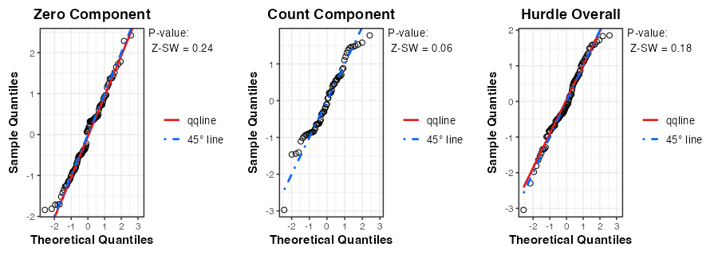
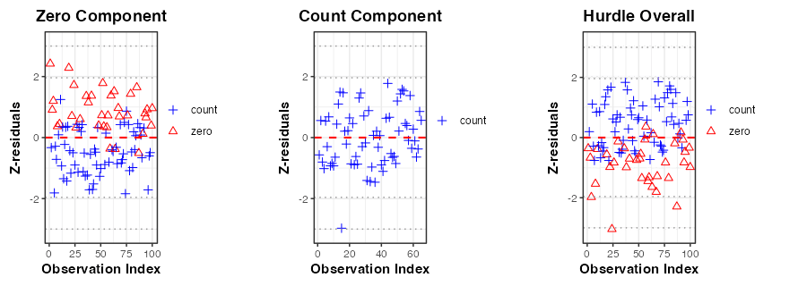
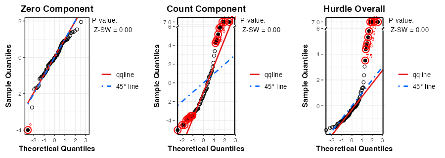
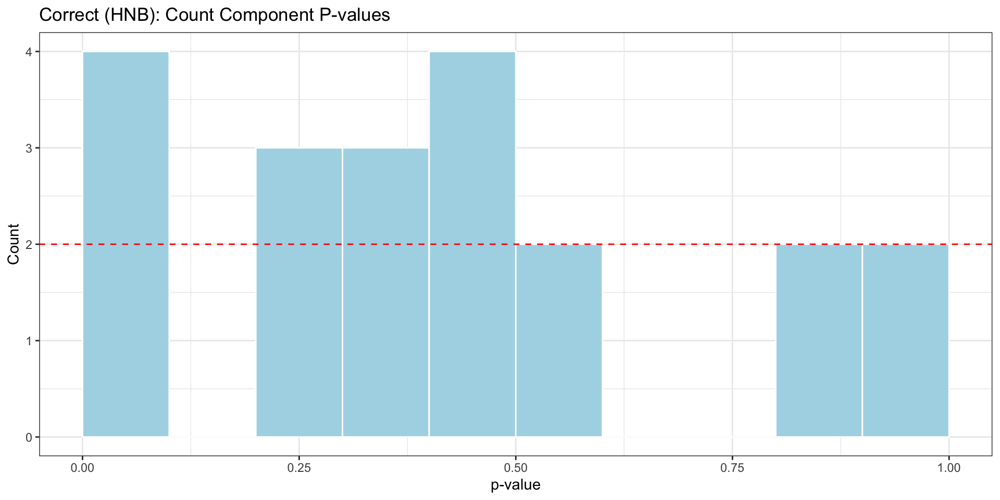
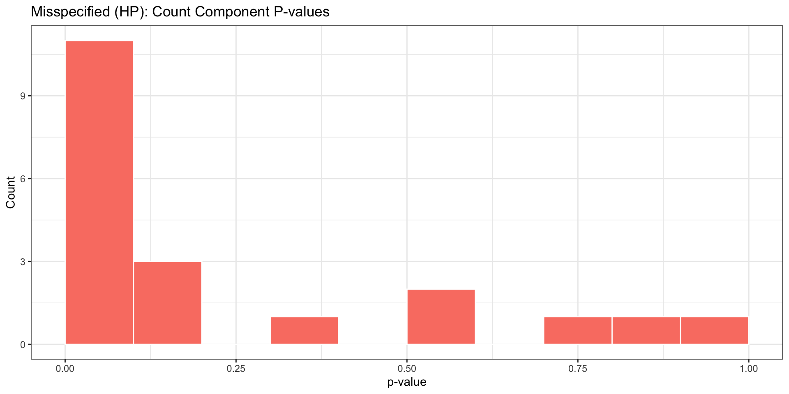

Code
# For developer use to refresh the local installation
remove.packages("Zresidual")
devtools::document()
devtools::install()2026-07-27
Source:vignettes/articles/demo_brms_hurdle.qmd
# For developer use to refresh the local installation
remove.packages("Zresidual")
devtools::document()
devtools::install()
# if (!requireNamespace("Zresidual", quietly = TRUE)) {
# if (!requireNamespace("remotes", quietly = TRUE)) install.packages("remotes")
# remotes::install_github("tiw150/Zresidual", upgrade = "never", dependencies = TRUE)
# }
# Vector of required CRAN packages explicitly used in this demo
pkgs_cran <- c(
"brms", # For model fitting
"rstan", # Fallback backend for brms
"distributions3", # For simulating truncated data
"dplyr", # For data manipulation and piping (%>%)
"gt", # For formatting tables
"gifski", # For rendering animated plots
"ggplot2", # Plotting backend used by Zresidual
"gridExtra" # Arranging multiple ggplot objects
)
missing_pkgs <- pkgs_cran[
!vapply(pkgs_cran, requireNamespace, logical(1), quietly = TRUE)
]
if (length(missing_pkgs)) {
message("Installing missing CRAN packages: ", paste(missing_pkgs, collapse = ", "))
install.packages(missing_pkgs, dependencies = TRUE)
}
invisible(lapply(pkgs_cran, function(p) {
suppressPackageStartupMessages(library(p, character.only = TRUE))
}))
# Use cmdstanr only if both the cmdstanr R package and CmdStan itself are available.
cmdstan_available <- FALSE
if (requireNamespace("cmdstanr", quietly = TRUE)) {
cmdstan_path <- tryCatch(
cmdstanr::cmdstan_path(),
error = function(e) ""
)
cmdstan_available <- nzchar(cmdstan_path) && dir.exists(cmdstan_path)
}
if (cmdstan_available) {
suppressPackageStartupMessages(library(cmdstanr))
brms_backend <- "cmdstanr"
message("Using brms backend: cmdstanr")
} else {
brms_backend <- "rstan"
message("Using brms backend: rstan")
message("cmdstanr is not used because CmdStan path is not set.")
}
nc <- parallel::detectCores(logical = FALSE)
if (!is.na(nc) && nc > 1) {
options(mc.cores = nc - 1)
}
brms_cores <- min(4, getOption("mc.cores", 1))This vignette demonstrates how to use the Zresidual package to compute component-wise Z-residuals for diagnosing Bayesian hurdle models (Mullahy 1986). Based on the output from the brms package in R (Bürkner 2017), Z-residuals can be calculated separately for the zero, count, and overall hurdle components to reveal potential model misspecifications.
To systematically illustrate this, we simulate 100 datasets from a Hurdle Negative Binomial model and fit two models to each: a correctly specified HNB model and a misspecified HP model. We evaluate a single dataset comprehensively using visualizations, and then leverage all 100 datasets to examine the sampling distribution of our diagnostic p-values.
PMF, survival function, and RPP for Bayesian hurdle models. Hurdle models consist of two parts:
Let C_i \in \{0, 1\}, where C_i = 1 indicates a non-zero value, and C_i = 0 indicates a zero value for the i^\text{th} observations. If C_i=1, the corresponding count model then operates on y_i^+ \in \{1, 2, \dots\}, i.e., the positive counts only.
Using Bayesian estimation (e.g., via thebrms package), we draw T samples from the posterior distribution. Let \theta^{(t)} denote the t^\text{th} posterior draw, including component-specific parameters like:
For a given observation y_i^\text{obs}, the component-wise posterior predictive PMF and survival functions are defined below.
p_i^{\text{post}, \pi^o_irdle}(y_i^\text{obs}) = \frac{1}{T} \sum_{t=1}^T \begin{cases} {\pi^o_i}^{(t)} & \text{if } y_i^\text{obs} = 0, \\ (1 - {\pi^o_i}^{(t)}) \cdot\frac{p_i^\text{UT}(y_i^\text{obs} | \theta^{(t)})}{1 - p_i^\text{UT}(0 | \theta^{(t)})} & \text{if } y_i^\text{obs} =1, 2, \ldots,\\ 0 & \text{otherwise.} \end{cases}
S_i^{\text{post}, \pi^o_irdle}(y_i^\text{obs}) = \frac{1}{T} \sum_{t=1}^T \begin{cases} 1 & \text{if } y_i^\text{obs} < 0, \\ 1-{\pi^o_i}^{(t)} & \text{if } 0 \le y_i^\text{obs} < 1, \\ (1 - {\pi^o_i}^{(t)}) \cdot \frac{S_i^\text{UT}(y_i^\text{obs} \mid \theta^{(t)})}{1-p_i^\text{UT}(0 \mid \theta^{(t)})} & \text{if } y_i^\text{obs} \ge 1. \end{cases}
p_i^{\text{post}, \text{logit}}(c_i^\text{obs}) = \frac{1}{T} \sum_{t=1}^T \begin{cases} {\pi^o_i}^{(t)} & \text{if } c_i^\text{obs} = 0, \\ 1 - {\pi^o_i}^{(t)} & \text{if } c_i^\text{obs} = 1,\\ 0 & \text{otherwise.} \end{cases} \tag{1}
S_i^{\text{post}, \text{logit}}(c_i^\text{obs}) = \frac{1}{T} \sum_{t=1}^T \begin{cases} 1 & \text{if } c_i^\text{obs} < 0, \\ 1-{\pi^o_i}^{(t)} & \text{if } 0 \le c_i^\text{obs} < 1, \\ 0, & \text{if } c_i^\text{obs} \ge 1. \end{cases} \tag{2}
p_i^{\text{post},\text{count}}({y_i^+}^\text{obs}) = \frac{1}{T} \sum_{t=1}^T \begin{cases} \frac{p_i^\text{UT}({y_i^+}^\text{obs} \mid \theta^{(t)})}{1 - p_i^\text{UT}(0 \mid \theta^{(t)})}, & \text{ for } {y_i^{+}}^\text{obs} = 1,2,\ldots,\\ 0 & \text{ otherwise.} \end{cases} \tag{3}
S_i^{\text{post}, \text{count}}({y_i^+}^\text{obs}) = \frac{1}{T} \sum_{t=1}^T \begin{cases} 1 & \text{ if } {y_i^+}^\text{obs} < 1 \\ \frac{S_i^\text{UT}({y_i^+}^\text{obs} \mid \theta^{(t)})}{1-p_i^\text{UT}(0 \mid \theta^{(t)})}, & \text{ if } {y_i^+}^\text{obs} \ge 1 \end{cases} \tag{4}
where p_i^\text{UT}(. \mid \theta^{(t)}) and S_i^\text{UT}(. \mid \theta^{(t)}) denote the PMF and survival function of the untruncated count distribution.
For any observed value y_i^\text{obs}, we define: \text{rsp}_i(y_i^\text{obs} | \theta^{(t)}) = S_i(y_i^\text{obs} | \theta^{(t)}) + U_i \times p_i(y_i^\text{obs} | \theta^{(t)}) \tag{5} where U_i \sim \text{Uniform}(0,1). Then, the Z-residual of a discrete response variable is: z_i = -\Phi^{-1}(\text{rsp}_i(y_i^\text{obs}|\theta)) \sim N(0, 1) \tag{6}
We simulate 100 datasets from a Hurdle Negative Binomial (HNB) process. For each dataset, we fit two models: 1. Correct Model: Hurdle Negative Binomial (family = hurdle_negbinomial()). 2. Misspecified Model: Hurdle Poisson (HP), approximated by forcing a very tight prior on the shape parameter (prior("normal(1000, 1)")), which causes the negative binomial to heavily resemble a Poisson distribution, restricting overdispersion.
Because MCMC sampling is computationally expensive, we execute and cache these 200 model fits to disk.
n_sim <- 20
n_sample <- 100
sim_data <- vector("list", n_sim)
for(i in 1:n_sim) {
data_file <- paste0(model_dir, "/data_sim_", i, ".rds")
wrong_model_file <- paste0(model_dir, "/wrong_sim_", i, ".rds")
correct_model_file <- paste0(model_dir, "/correct_sim_", i, ".rds")
# # --- 1. Check and Handle Data ---
if (!force_refit && file.exists(data_file)) {
sim_data[[i]] <- readRDS(data_file)
} else {
x <- rnorm(n_sample)
z <- rnorm(n_sample)
# Hurdle (zero) part
logit_p <- -1 - 1 * x
p_zero <- exp(logit_p) / (1 + exp(logit_p))
zeros <- rbinom(n_sample, 1, p_zero)
# Count (non-zero) part
# FIX: Lowered intercept and slope to prevent exp() overflow
log_mu <- 1.5 + 2 * x
mu <- exp(log_mu)
size <- 6
# Generate from zero-truncated negative binomial
prob <- size / (size + mu)
y <- (1 - zeros) * distributions3::rztnbinom(n_sample, size, prob)
dat_i <- data.frame(y = y, x = x, z = z)
sim_data[[i]] <- dat_i
saveRDS(dat_i, file = data_file)
}
# --- 2. Check and Fit Misspecified Model (HP Approx) ---
if (force_refit || !file.exists(wrong_model_file)) {
tryCatch({
brms::brm(
bf(y ~ x + z, hu ~ x + z),
family = hurdle_negbinomial(),
prior = prior("normal(1000, 1)", class = "shape"),
data = sim_data[[i]],
backend = brms_backend,
file = paste0(model_dir, "/wrong_sim_", i),
refresh = 0,
cores = 4,
# Optional: tighten control parameters for the tricky prior
control = list(adapt_delta = 0.95)
)
}, error = function(e) {
message(sprintf("Iteration %d: Wrong model failed to fit - %s", i, e$message))
})
}
# --- 3. Check and Fit Correct Model (HNB) ---
if (force_refit || !file.exists(correct_model_file)) {
tryCatch({
brms::brm(
bf(y ~ x + z, hu ~ x + z),
family = hurdle_negbinomial(),
data = sim_data[[i]],
backend = brms_backend,
file = paste0(model_dir, "/correct_sim_", i),
refresh = 0,
cores = 4
)
}, error = function(e) {
message(sprintf("Iteration %d: Correct model failed to fit - %s", i, e$message))
})
}
}Let’s load the first dataset to demonstrate Zresidual directly. We compute Z-residuals for both models separately across the logistic (zero), count, and overall hurdle components using the "post" summary method. Notice that type and mcmc_summarize are passed directly as arguments to Zresidual().
dat <- readRDS(paste0(model_dir, "/data_sim_2.rds"))
fit_correct <- brm(bf(y ~ x + z, hu ~ x + z), family = hurdle_negbinomial(), data = dat, backend = brms_backend, file = paste0(model_dir, "/correct_sim_2"))
fit_wrong <- brm(bf(y ~ x + z, hu ~ x + z), family = hurdle_negbinomial(), prior = prior("normal(1000, 1)", class = "shape"), data = dat, backend = brms_backend, file = paste0(model_dir, "/wrong_sim_2"))
# Correct Model (HNB) Z-residuals and Covariates
zres_c_hurdle <- Zresidual(fit_correct, data = dat, mcmc_summarize = "post", randomized = TRUE, nrep = 10)
zcov_c_hurdle <- Zcov(fit_correct, data = dat)
# Misspecified Model (HP) Z-residuals and Covariates
zres_w_hurdle <- Zresidual(fit_wrong, data = dat, mcmc_summarize = "post", randomized = TRUE, nrep = 10)
zcov_w_hurdle <- Zcov(fit_wrong, data = dat)
# Correct Model (HNB) Z-residuals and Covariates
zres_c_count <- Zresidual(fit_correct, data = dat, type = "count", mcmc_summarize = "post", randomized = TRUE, nrep = 10)
zcov_c_count <- Zcov(fit_correct, data = dat, type = "count")
# Misspecified Model (HP) Z-residuals and Covariates
zres_w_count <- Zresidual(fit_wrong, data = dat, type = "count", mcmc_summarize = "post", randomized = TRUE, nrep = 10)
zcov_w_count <- Zcov(fit_wrong, data = dat, type = "count")
# Correct Model (HNB) Z-residuals and Covariates
zres_c_zero <- Zresidual(fit_correct, data = dat, type = "zero", mcmc_summarize = "post", randomized = TRUE, nrep = 10)
zcov_c_zero <- Zcov(fit_correct, data = dat, type = "zero")
# Misspecified Model (HP) Z-residuals and Covariates
zres_w_zero <- Zresidual(fit_wrong, data = dat, type = "zero", mcmc_summarize = "post", randomized = TRUE, nrep = 10)
zcov_w_zero <- Zcov(fit_wrong, data = dat, type = "zero")The following animations show component-wise QQ plots over 10 randomized replicates for the correctly specified model.
gif_qq_path_c <- file.path(
model_dir,
"hnb_qqplot_ggplot_v2.gif"
)
if (force_rerun || !file.exists(gif_qq_path_c)) {
n_frames_c <- min(
10L,
ncol(zres_c_zero),
ncol(zres_c_count),
ncol(zres_c_hurdle)
)
frame_dir <- tempfile("hnb_qq_frames_")
dir.create(frame_dir)
frame_files <- file.path(
frame_dir,
sprintf("frame_%03d.png", seq_len(n_frames_c))
)
grDevices::pdf(file = NULL)
for (i in seq_len(n_frames_c)) {
qq_zero <- qqnorm(
zres_c_zero,
zcov = zcov_c_zero,
irep = i,
main.title = "Zero Component"
)$plots[[1L]]
qq_count <- qqnorm(
zres_c_count,
zcov = zcov_c_count,
irep = i,
main.title = "Count Component"
)$plots[[1L]]
qq_hurdle <- qqnorm(
zres_c_hurdle,
zcov = zcov_c_hurdle,
irep = i,
main.title = "Hurdle Overall"
)$plots[[1L]]
combined_plot <- gridExtra::arrangeGrob(
grobs = list(qq_zero, qq_count, qq_hurdle),
ncol = 3
)
ggplot2::ggsave(
filename = frame_files[i],
plot = combined_plot,
width = 9,
height = 3.2,
units = "in",
dpi = 100,
bg = "white"
)
}
grDevices::dev.off()
gif_temp <- tempfile(fileext = ".gif")
gifski::gifski(
png_files = frame_files,
gif_file = gif_temp,
width = 900,
height = 320,
delay = 0.8,
loop = TRUE
)
copied <- file.copy(
from = gif_temp,
to = gif_qq_path_c,
overwrite = TRUE
)
if (!copied) {
stop("Failed to copy the HNB Q-Q animation.")
}
unlink(frame_dir, recursive = TRUE)
unlink(gif_temp)
}
knitr::include_graphics(gif_qq_path_c)
As expected, all residual points align cleanly with the 45-degree normal reference line.
gif_scatter_path_c <- file.path(
model_dir,
"hnb_scatterplot_ggplot_v2.gif"
)
if (force_rerun || !file.exists(gif_scatter_path_c)) {
n_frames_c <- min(
10L,
ncol(zres_c_zero),
ncol(zres_c_count),
ncol(zres_c_hurdle)
)
frame_dir <- tempfile("hnb_scatter_frames_")
dir.create(frame_dir)
frame_files <- file.path(
frame_dir,
sprintf("frame_%03d.png", seq_len(n_frames_c))
)
grDevices::pdf(file = NULL)
for (i in seq_len(n_frames_c)) {
scatter_zero <- plot(
zres_c_zero,
zcov = zcov_c_zero,
irep = i,
x_axis_var = "index",
main.title = "Zero Component",
xlab = "Observation Index",
ylab = "Z-residuals"
) +
ggplot2::geom_hline(
yintercept = 0,
colour = "red",
linetype = 2,
linewidth = 0.7
)
scatter_count <- plot(
zres_c_count,
zcov = zcov_c_count,
irep = i,
x_axis_var = "index",
main.title = "Count Component",
xlab = "Observation Index",
ylab = "Z-residuals"
) +
ggplot2::geom_hline(
yintercept = 0,
colour = "red",
linetype = 2,
linewidth = 0.7
)
scatter_hurdle <- plot(
zres_c_hurdle,
zcov = zcov_c_hurdle,
irep = i,
x_axis_var = "index",
main.title = "Hurdle Overall",
xlab = "Observation Index",
ylab = "Z-residuals"
) +
ggplot2::geom_hline(
yintercept = 0,
colour = "red",
linetype = 2,
linewidth = 0.7
)
combined_plot <- gridExtra::arrangeGrob(
grobs = list(
scatter_zero,
scatter_count,
scatter_hurdle
),
ncol = 3
)
ggplot2::ggsave(
filename = frame_files[i],
plot = combined_plot,
width = 9,
height = 3.2,
units = "in",
dpi = 100,
bg = "white"
)
}
grDevices::dev.off()
gif_temp <- tempfile(fileext = ".gif")
gifski::gifski(
png_files = frame_files,
gif_file = gif_temp,
width = 900,
height = 320,
delay = 0.8,
loop = TRUE
)
copied <- file.copy(
from = gif_temp,
to = gif_scatter_path_c,
overwrite = TRUE
)
if (!copied) {
stop("Failed to copy the HNB scatterplot animation.")
}
unlink(frame_dir, recursive = TRUE)
unlink(gif_temp)
}
knitr::include_graphics(gif_scatter_path_c)
When we fit the HP model to the HNB data, we expect the zero component to be fine (since the logistic function is identical), but the count and overall hurdle components to show overdispersion misspecification.
gif_qq_path_w <- file.path(
model_dir,
"hp_qqplot_ggplot_v2.gif"
)
if (force_rerun || !file.exists(gif_qq_path_w)) {
n_frames_w <- min(
10L,
ncol(zres_w_zero),
ncol(zres_w_count),
ncol(zres_w_hurdle)
)
frame_dir <- tempfile("hp_qq_frames_")
dir.create(frame_dir)
frame_files <- file.path(
frame_dir,
sprintf("frame_%03d.png", seq_len(n_frames_w))
)
grDevices::pdf(file = NULL)
for (i in seq_len(n_frames_w)) {
qq_zero <- qqnorm(
zres_w_zero,
zcov = zcov_w_zero,
irep = i,
main.title = "Zero Component"
)$plots[[1L]]
qq_count <- qqnorm(
zres_w_count,
zcov = zcov_w_count,
irep = i,
main.title = "Count Component"
)$plots[[1L]]
qq_hurdle <- qqnorm(
zres_w_hurdle,
zcov = zcov_w_hurdle,
irep = i,
main.title = "Hurdle Overall"
)$plots[[1L]]
combined_plot <- gridExtra::arrangeGrob(
grobs = list(qq_zero, qq_count, qq_hurdle),
ncol = 3
)
ggplot2::ggsave(
filename = frame_files[i],
plot = combined_plot,
width = 9,
height = 3.2,
units = "in",
dpi = 100,
bg = "white"
)
}
grDevices::dev.off()
gif_temp <- tempfile(fileext = ".gif")
gifski::gifski(
png_files = frame_files,
gif_file = gif_temp,
width = 900,
height = 320,
delay = 0.8,
loop = TRUE
)
copied <- file.copy(
from = gif_temp,
to = gif_qq_path_w,
overwrite = TRUE
)
if (!copied) {
stop("Failed to copy the HP Q-Q animation.")
}
unlink(frame_dir, recursive = TRUE)
unlink(gif_temp)
}
knitr::include_graphics(gif_qq_path_w)
The component-wise approach clearly isolates the error: the zero-component matches the data, while the count-component displays severe S-curve deviations typical of unmodeled variance (overdispersion).
We evaluate the models computationally by summarizing the SW, ANOVA, and BL tests across components.
# Function to extract mean p-values across replicates
get_pvals <- function(zres, zcov) {
c(
SW = mean(as.numeric(sw.test.zresid(zres))),
AOV = mean(as.numeric(aov.test.zresid(zres, X = "lp", zcov = zcov))),
BL = mean(as.numeric(bartlett.test.zresid(zres, X = "lp", zcov = zcov)))
)
}
res_c_zero <- get_pvals(zres_c_zero, zcov_c_zero)
res_c_count <- get_pvals(zres_c_count, zcov_c_count)
res_c_hurdle <- get_pvals(zres_c_hurdle, zcov_c_hurdle)
res_w_zero <- get_pvals(zres_w_zero, zcov_w_zero)
res_w_count <- get_pvals(zres_w_count, zcov_w_count)
res_w_hurdle <- get_pvals(zres_w_hurdle, zcov_w_hurdle)
table_df <- data.frame(
Component = c("Logistic (Zero)", "Count (+)", "Overall Hurdle"),
HNB_SW = c(res_c_zero["SW"], res_c_count["SW"], res_c_hurdle["SW"]),
HNB_AOV = c(res_c_zero["AOV"], res_c_count["AOV"], res_c_hurdle["AOV"]),
HNB_BL = c(res_c_zero["BL"], res_c_count["BL"], res_c_hurdle["BL"]),
HP_SW = c(res_w_zero["SW"], res_w_count["SW"], res_w_hurdle["SW"]),
HP_AOV = c(res_w_zero["AOV"], res_w_count["AOV"], res_w_hurdle["AOV"]),
HP_BL = c(res_w_zero["BL"], res_w_count["BL"], res_w_hurdle["BL"])
)
table_df %>%
gt() %>%
tab_spanner(label = "Correct (HNB) p-values", columns = starts_with("HNB_")) %>%
tab_spanner(label = "Misspecified (HP) p-values", columns = starts_with("HP_")) %>%
cols_label(
HNB_SW = "Shapiro-Wilk", HNB_AOV = "ANOVA", HNB_BL = "Bartlett",
HP_SW = "Shapiro-Wilk", HP_AOV = "ANOVA", HP_BL = "Bartlett"
) %>%
fmt_number(columns = -Component, decimals = 4) %>%
cols_align(align = "center", columns = everything()) %>%
tab_style(
style = cell_text(weight = "bold", color = "red"),
locations = cells_body(columns = starts_with("HP_"), rows = Component != "Logistic (Zero)")
) %>%
tab_options(table.width = pct(100), table.font.size = px(14))| Component |
Correct (HNB) p-values
|
Misspecified (HP) p-values
|
||||
|---|---|---|---|---|---|---|
| Shapiro-Wilk | ANOVA | Bartlett | Shapiro-Wilk | ANOVA | Bartlett | |
| Logistic (Zero) | 0.4084 | 0.6172 | 0.5381 | 0.4275 | 0.3885 | 0.5886 |
| Count (+) | 0.2692 | 0.8726 | 0.8565 | 0.0001 | 0.5768 | 0.2223 |
| Overall Hurdle | 0.1485 | 0.5758 | 0.8765 | 0.0000 | 0.3138 | 0.0031 |
The table confirms our visual inspection. The correctly specified HNB model yields uniformly high p-values across all tests and components. For the misspecified HP model, the Logistic (Zero) component remains valid, but the Count component triggers massively significant failures, appropriately failing the overall Hurdle tests.
To prove this behavior isn’t an artifact of our single chosen dataset, we analyze the sampling distribution of the ANOVA p-values across all 100 simulated datasets.
Since the misspecification lies solely in the variance of the non-zero outcomes, we isolate the Zresidual(..., type="count") diagnostics for this analysis.
ana_res_file <- paste0(model_dir, "/ana_pvalues.rds")
if (!force_recalcz && file.exists(ana_res_file)) {
res <- readRDS(ana_res_file)
p_c <- res$p_c
p_w <- res$p_w
} else {
p_c <- numeric(n_sim)
p_w <- numeric(n_sim)
for(i in 1:n_sim) {
dat_sim <- readRDS(paste0(model_dir, "/data_sim_", i, ".rds"))
# Extract Misspecified Model (HP)
fit_w_sim <- brm(bf(y ~ x + z, hu ~ x + z), family = hurdle_negbinomial(), prior = prior("normal(1000, 1)", class = "shape"), data = dat_sim, backend = brms_backend, file = paste0(model_dir, "/wrong_sim_", i), refresh = 0)
z_w_sim <- Zresidual(fit_w_sim, data = dat_sim, type = "count", mcmc_summarize = "post", randomized = TRUE, nrep = 1)
zcov_w_sim <- Zcov(fit_w_sim, data = dat_sim, type = "count")
p_w[i] <- as.numeric(aov.test.zresid(z_w_sim, X = "lp", zcov = zcov_w_sim))
# Extract Correct Model (HNB)
fit_c_sim <- brm(bf(y ~ x + z, hu ~ x + z), family = hurdle_negbinomial(), data = dat_sim, backend = brms_backend, file = paste0(model_dir, "/correct_sim_", i), refresh = 0)
z_c_sim <- Zresidual(fit_c_sim, data = dat_sim, type = "count", mcmc_summarize = "post", randomized = TRUE, nrep = 1)
zcov_c_sim <- Zcov(fit_c_sim, data = dat_sim, type = "count")
p_c[i] <- as.numeric(aov.test.zresid(z_c_sim, X = "lp", zcov = zcov_c_sim))
}
saveRDS(list(p_c = p_c, p_w = p_w), ana_res_file)
}
p_correct <- ggplot(data.frame(p_value = p_c), aes(x = p_value)) +
geom_histogram(breaks = seq(0, 1, by = 0.1),
fill = "lightblue", colour = "white") +
geom_hline(yintercept = n_sim / 10, colour = "red", linetype = 2) +
labs(title = "Correct (HNB): Count Component P-values",
x = "p-value", y = "Count") +
theme_bw()
p_wrong <- ggplot(data.frame(p_value = p_w), aes(x = p_value)) +
geom_histogram(breaks = seq(0, 1, by = 0.1),
fill = "salmon", colour = "white") +
labs(title = "Misspecified (HP): Count Component P-values",
x = "p-value", y = "Count") +
theme_bw()
p_correct
p_wrong

The resulting histograms validate the methodology: the correctly specified model generates uniformly distributed p-values across datasets, while the component-wise test on the misspecified model correctly and consistently flags the overdispersion defect with low p-values.